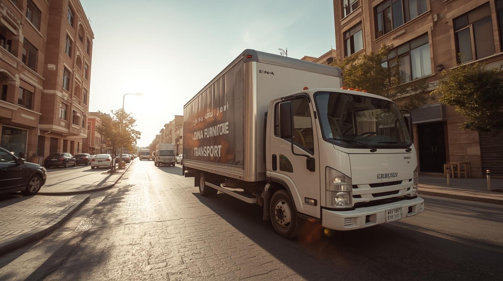
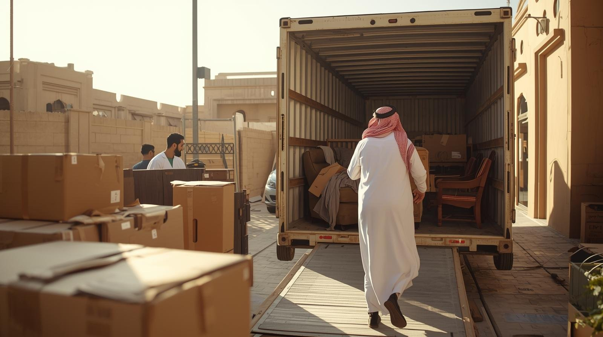

دينا نقل عفش حي العليا الرياض

إذا كنت تبحث عن دينا نقل عفش حي العليا تقدم لك خدمة موثوقة وسريعة، فإن شركة نقل الرياض هي خيارك المثالي، تمتلك الشركة خبرة واسعة في مجال نقل العفش بحي العليا، وتوفر أسطولًا من سيارات الدينا المجهزة بالكامل لضمان نقل الأثاث بأمان واحترافية، كما توفر شركة نقل الرياض فريقًا متخصصًا في فك وتغليف وتركيب الأثاث بعناية فائقة، مع الالتزام بالمواعيد وتقديم أسعار تنافسية تناسب جميع العملاء، لذلك، إذا كنت تريد تجربة نقل خالية من المتاعب داخل أو خارج حي العليا، تواصل مع شركة نقل الرياض الآن واستمتع بخدمة دينا نقل عفش حي العليا احترافية تضمن لك الراحة والثقة في كل خطوة.
دينا نقل عفش في حي العليا شمال الرياض
تُعد خدمة دينا نقل عفش حي العليا شمال الرياض من الخدمات الأساسية التي يبحث عنها سكان المنطقة نظرًا لكثرة التنقلات داخل الأحياء الراقية والمناطق السكنية الحديثة، وتتفوق شركة نقل الرياض في تقديم هذه الخدمة باحترافية عالية، حيث توفر سيارات دينا مجهزة لنقل جميع أنواع الأثاث والأجهزة الكهربائية بأمان تام، مع فريق عمل مدرّب على الفك والتركيب والتغليف باستخدام أفضل المواد الواقية، سواء كنت تنتقل من شقة إلى أخرى أو من مكتب إلى فيلا، تضمن لك شركة نقل الرياض تجربة نقل سريعة وآمنة دون أي تلفيات أو تأخير، مع التزام كامل بالجودة والدقة في المواعيد.
أفضل خدمات دينا نقل عفش في حي العليا
تُعتبر دينا نقل عفش حي العليا من أكثر الخدمات طلبًا بين سكان شمال الرياض، نظرًا لما توفره من سرعة وأمان في عملية النقل، وتعد شركة نقل الرياض من الشركات الرائدة في هذا المجال، حيث تقدم أفضل خدمات دينا نقل عفش بحي العليا بفضل أسطولها الحديث من سيارات الدينا المجهزة وفريقها المتخصص في فك وتغليف وتركيب الأثاث باحترافية عالية. كما تضمن الشركة سلامة جميع الممتلكات أثناء النقل مع الالتزام بالمواعيد وتقديم أسعار مناسبة، سواء كنت تبحث عن نقل منزلك أو مكتبك داخل حي العليا أو خارجه، فإن شركة نقل الرياض توفر لك الحل الأمثل بتجربة نقل سلسة ومريحة دون عناء.
نصائح هامة عند تحميل ونقل الأثاث في حي العليا
عند القيام بعملية تحميل ونقل الأثاث في حي العليا، من المهم اتباع مجموعة من النصائح لضمان سلامة الأثاث وتسهيل عملية النقل بشكل احترافي. أولًا، احرص على فك القطع الكبيرة مثل الدولاب والسرير قبل النقل لتجنب التلف أثناء التحميل. ثانيًا، استخدم مواد تغليف قوية مثل البلاستيك المقوى والفقاعات الهوائية لحماية الأثاث من الخدوش أو الكسر. ثالثًا، يُفضل الاستعانة بـ شركة نقل الرياض المتخصصة في دينا نقل عفش حي العليا، حيث تمتلك الخبرة والأدوات اللازمة لنقل الأثاث بأمان وسرعة. وأخيرًا، تأكد من تنظيم القطع داخل سيارة الدينا بطريقة تضمن التوازن وتمنع التحرك أثناء السير، لضمان وصول الأثاث إلى الوجهة الجديدة بحالة ممتازة.
سيارات نصف نقل لنقل العفش بالرياض
خدمات نقل المستندات والأغراض الهامة في حي العليا والمعذر الشمالي
تقدم شركة نقل الرياض خدمات متكاملة تشمل نقل المستندات والأغراض الهامة في حي العليا والمعذر الشمالي بأعلى مستويات الأمان والسرية، فالشركة تدرك أهمية الوثائق و المحتويات الحساسة التي تحتاج إلى عناية خاصة أثناء النقل، لذا توفر سيارات دينا مجهزة ومغلقة لضمان الحماية التامة من العوامل الخارجية، كما يعتمد فريق العمل على أساليب تعبئة وتأمين دقيقة تضمن عدم تعرض المستندات أو الأجهزة لأي تلف أو فقدان، وتتميز خدمة دينا نقل عفش حي العليا من شركة نقل الرياض بالالتزام بالمواعيد والدقة في التسليم، مما يجعلها الخيار الأفضل للشركات والمكاتب والأفراد الذين يبحثون عن خدمة موثوقة وآمنة في كل من حي العليا والمعذر الشمالي.
خطوات الاستعانة بدينا وانيت لنقل العفش في حي العليا
إذا كنت تخطط للاستعانة بـ ونيت أو دينا نقل عفش حي العليا، فهناك مجموعة من الخطوات البسيطة التي تضمن لك تجربة نقل آمنة ومنظمة.
- التواصل مع شركة متخصصة: ابدأ بالتواصل مع شركة نقل الرياض، فهي توفر سيارات دينا وونيت مجهزة وفِرق عمل محترفة لخدمة حي العليا والمناطق المجاورة.
- تحديد نوع الأثاث والموقع: زوّد الشركة بتفاصيل الأثاث المراد نقله وعدد القطع لتحديد حجم السيارة وعدد العمال المناسبين.
- تحديد الموعد المناسب: اختر الوقت الأنسب للنقل لتجنب الزحام وضمان وصول الفريق في الموعد المحدد.
- تنفيذ عملية الفك والتغليف: يتولى فريق شركة نقل الرياض فك الأثاث وتغليفه بعناية باستخدام مواد آمنة تحميه من الخدوش والكسر.
- تحميل الأثاث في الدينا أو الونيت: يتم ترتيب القطع داخل السيارة بطريقة منظمة تضمن ثباتها أثناء النقل.
- النقل والتركيب في الوجهة الجديدة: بعد الوصول، يقوم الفريق بإعادة تركيب الأثاث في المكان المطلوب بدقة واحترافية.
بهذه الخطوات، تضمن أن خدمة دينا نقل عفش حي العليا تتم بسهولة وسرعة مع الحفاظ الكامل على جميع ممتلكاتك.
دينا نقل عفش حي ظهرة لبن
تُعد دينا نقل عفش حي ظهرة لبن من الخدمات الموثوقة التي يعتمد عليها سكان الحي في نقل الأثاث والأغراض المنزلية بأمان وسرعة. تتميز هذه الخدمة بتوفير سيارات نقل مجهزة خصيصًا لحماية العفش من الخدوش أو التلف أثناء النقل، بالإضافة إلى فريق عمل متخصص في فك وتركيب وتغليف الأثاث باستخدام أفضل المواد. سواء كنت تنتقل إلى منزل جديد داخل حي ظهرة لبن أو إلى أي حي آخر بالرياض، فإن دينا نقل العفش تضمن لك تجربة نقل مريحة، منظمة، وسريعة بأسعار تنافسية تناسب جميع الميزانيات.
تحديد خطوات نقل العفش مع أفضل شركة نقل بالرياض
تُعتبر شركة نقل الرياض من أفضل الشركات المتخصصة في تقديم خدمات دينا نقل عفش حي العليا وجميع أنحاء الرياض، وذلك بفضل اعتمادها على خطوات منظمة تضمن راحة العميل وسلامة الأثاث من البداية حتى النهاية. إليك أهم خطوات نقل العفش مع أفضل شركة نقل بالرياض:
- استقبال الطلب والتقييم: يبدأ فريق خدمة العملاء في شركة نقل الرياض باستقبال طلبك وتحديد تفاصيل العفش المطلوب نقله، والموقعين (القديم والجديد)، لتقديم عرض سعر دقيق ومناسب.
- تحديد الموعد وتجهيز الفريق: يتم تحديد موعد مناسب للعميل، مع تجهيز فريق فني متخصص في الفك، التغليف، والتحميل، إلى جانب تجهيز سيارات الدينا أو الونيت الملائمة لنوع الأثاث.
- فك وتغليف الأثاث بعناية: يقوم الفنيون بفك الأثاث والأجهزة بعناية تامة، مع استخدام مواد تغليف آمنة تحميها من الكسر أو الخدوش أثناء النقل.
- تحميل العفش في سيارات النقل: يتم ترتيب القطع داخل السيارة بطريقة احترافية تضمن التوازن والثبات خلال الرحلة، مع مراعاة ترتيب الأغراض حسب الأولوية في التفريغ.
- النقل والتركيب في المكان الجديد: بعد الوصول، يتولى الفريق تنزيل الأثاث وإعادة تركيبه في المكان المطلوب، مع ترتيب الأغراض حسب رغبة العميل.
- التأكد من رضا العميل: في النهاية، يتحقق مشرف الفريق من أن جميع القطع نُقلت بأمان وأن العميل راضٍ تمامًا عن الخدمة.
من خلال هذه الخطوات الدقيقة، تضمن شركة نقل الرياض تقديم تجربة دينا نقل عفش حي العليا احترافية وسريعة، تجمع بين الجودة، الأمان، والالتزام بالمواعيد.
تغليف المستندات والبضائع مع دينا نقل الأثاث في حي العليا
تولي شركة نقل الرياض اهتمامًا خاصًا بخدمة تغليف المستندات والبضائع مع دينا نقل عفش حي العليا، نظرًا لحساسية هذه العناصر وأهميتها الكبيرة أثناء عملية النقل، تعتمد الشركة على أحدث تقنيات التغليف لضمان سلامة الأوراق الرسمية والمحتويات التجارية أو الشخصية، حيث يتم استخدام صناديق كرتونية مقواة، وأكياس مقاومة للرطوبة، ومواد تغليف آمنة لحماية الملفات من التلف أو التمزق، أما بالنسبة للبضائع، فتُستخدم طبقات من البلاستيك الواقي والمواد المبطنة لتأمينها أثناء التحميل والنقل داخل سيارات الدينا المجهزة، بفضل خبرة شركة نقل الرياض وفريقها المدرب، يمكنك الاطمئنان إلى أن عملية دينا نقل عفش حي العليا تشمل أعلى معايير الأمان والدقة في التعامل مع المستندات والبضائع حتى تصل إلى وجهتها بسلام تام.
أرخص دينا نقل عفش وأثاث في حي العليا وحي السلمانية
تُعد خدمة دينا نقل عفش حي العليا وحي السلمانية من أبرز الخدمات التي تقدمها شركة نقل الرياض بأرخص التكاليف لعملائها داخل مدينة الرياض، حيث تتميز الشركة بتوفير سيارات دينا مجهزة بالكامل لنقل جميع أنواع الأثاث والمقتنيات الثمينة بأمان تام، وتوفر الشركة فريق عمل محترف ومتخصص في فك وتغليف وتركيب الأثاث، باستخدام أدوات ومواد تغليف عالية الجودة لضمان عدم حدوث أي تلف أثناء النقل، سواء كنت بحاجة إلى دينا نقل عفش حي العليا أو تبحث عن خدمة موثوقة من دينا نقل عفش بحي العليا والسلمانية، فإن شركة نقل الرياض توفر لك الحل المثالي بخدمة سريعة وآمنة وأسعار تنافسية تناسب الجميع.
احصل على أفضل دينا لنقل الأثاث في حي العليا وحي السلمانية
احصل على أفضل دينا نقل عفش حي العليا وحي السلمانية مع شركة نقل الرياض، الرائدة في تقديم خدمات النقل الاحترافية داخل مدينة الرياض، توفر الشركة سيارات دينا حديثة ومجهزة بالكامل لنقل جميع أنواع الأثاث والمقتنيات الثمينة بأمان وسرعة، مع فريق متخصص في الفك والتغليف والتركيب باستخدام مواد عالية الجودة تضمن حماية ممتلكاتك من أي ضرر، سواء كنت تبحث عن دينا نقل عفش حي العليا أو تحتاج إلى خدمة موثوقة من دينا نقل عفش بحي العليا والسلمانية، فإن شركة نقل الرياض تقدم لك الحل الأمثل بخدمة منظمة، التزام تام بالمواعيد، وأسعار تنافسية تجعل تجربة النقل سهلة ومريحة دون أي عناء.
خدمات القياس والتخطيط قبل النقل في حي العليا
تُعد خدمات القياس والتخطيط قبل النقل في حي العليا من الخطوات الأساسية التي تقدمها شركة نقل الرياض لضمان عملية نقل ناجحة وآمنة، تبدأ الخدمة بزيارة فريق متخصص لموقع العميل لتقييم حجم الأثاث والمساحات المتاحة في الموقع الجديد، مما يساعد على اختيار دينا نقل عفش حي العليا المناسبة من حيث السعة والتجهيزات، كما يتم خلال مرحلة التخطيط تحديد مسار التحميل والتنزيل لتفادي أي عقبات أثناء النقل، بالإضافة إلى وضع خطة دقيقة لترتيب الأثاث داخل السيارة بطريقة تضمن الحماية القصوى من الاهتزاز أو التلف.
هذه الخطوات الاحترافية تجعل شركة نقل الرياض الخيار الأول لكل من يبحث عن دقة وتنظيم في عمليات دينا نقل عفش بحي العليا داخل الرياض.
أفضل دينا نقل عفش في الرياض – حي العليا
إذا كنت تبحث عن أفضل دينا نقل عفش حي العليا، فإن شركة نقل الرياض هي خيارك الأمثل للحصول على خدمة احترافية تجمع بين السرعة والأمان والدقة في المواعيد، توفر الشركة سيارات دينا مجهزة بالكامل لنقل جميع أنواع الأثاث، سواء المنزلي أو المكتبي، مع فريق عمل متخصص في الفك والتغليف والتركيب باحترافية عالية، كما تقدم شركة نقل الرياض خدمة دينا نقل عفش حي العليا بأسعار تنافسية وضمان كامل على سلامة ممتلكاتك أثناء النقل. بفضل خبرتها الطويلة وسمعتها الممتازة في السوق، أصبحت الشركة الوجهة الأولى لكل من يبحث عن تجربة نقل مريحة وآمنة داخل حي العليا والمناطق المجاورة.

تجنب ترك فراغات داخل سيارة نقل الأغراض في حي العليا والمعذر
يُعد تجنب ترك فراغات داخل سيارة نقل الأغراض في حي العليا والمعذر خطوة مهمة للحفاظ على سلامة الأثاث والمقتنيات أثناء عملية النقل، فوجود فراغات بين القطع داخل سيارة النقل قد يؤدي إلى تحرك الأغراض أثناء السير، مما يسبب خدوشًا أو تلفًا غير مرغوب فيه، لذلك، تحرص شركة نقل الرياض على تعبئة السيارة بطريقة منظمة تضمن توزيع الأحمال بشكل متوازن، مع استخدام مواد تثبيت وتغليف قوية تمنع الانزلاق أو الاهتزاز، كما يعتمد فريق دينا نقل عفش حي العليا على تقنيات احترافية في ترتيب العفش داخل السيارة لضمان أقصى درجات الأمان أثناء النقل من أو إلى حي العليا والمعذر، مما يجعل الخدمة أكثر كفاءة وموثوقية.
في الختام، تُثبت شركة نقل الرياض مكانتها كواحدة من أفضل الشركات المتخصصة في دينا نقل عفش حي العليا بفضل خبرتها الطويلة وحرصها على تقديم خدمات احترافية وآمنة تلبي احتياجات العملاء، سواء كنت تبحث عن دينا نقل عفش بحي العليا أو ترغب في نقل أثاثك من وإلى الأحياء المجاورة مثل المعذر والسلمانية، يمكنك الاعتماد على الشركة بثقة تامة، مع فريق مدرب، سيارات مجهزة، وأسعار تنافسية، تضمن لك شركة نقل الرياض تجربة نقل مريحة وسلسة تحافظ على ممتلكاتك وتوفر لك راحة البال في كل خطوة من خطوات النقل.
الأسئلة الشائعة حول دينا نقل عفش حي العليا
ما المميزات التي تقدمها شركة نقل الرياض في خدمة دينا نقل عفش حي العليا؟
تتميز شركة نقل الرياض بتوفير سيارات دينا مجهزة، وفريق عمل مدرب على أعلى مستوى للفك والتغليف والتركيب، مع التزام تام بالمواعيد وأسعار تنافسية تناسب الجميع.
هل يمكن حجز دينا نقل عفش بحي العليا في نفس اليوم؟
نعم، توفر شركة نقل الرياض خدمة الحجز الفوري في نفس اليوم حسب توفر المواعيد، لتلبية احتياجات العملاء الطارئة بسرعة واحترافية.
هل تشمل الخدمة نقل الأثاث فقط أم يمكن نقل الأجهزة والمستندات أيضًا؟
تشمل الخدمة نقل جميع أنواع الأثاث والأجهزة الكهربائية والمستندات والبضائع، مع استخدام مواد تغليف خاصة لحماية كل نوع من الأغراض أثناء النقل.
هل تقدم شركة نقل الرياض خدماتها خارج حي العليا؟
نعم، تقدم الشركة خدماتها في جميع أحياء الرياض مثل المعذر، السلمانية، النخيل، والملز، بنفس مستوى الجودة والدقة في التنفيذ.